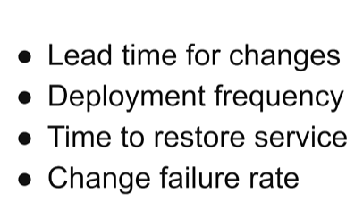

什么是DevOps指标？DevOps指标是直接展示DevOps软件开发流水线的能力数据，有助于快速识别和消除流程中的瓶颈。这些指标不仅能用于跟踪团队流程，也能反映团队的技术能力。DevOps的核心是打破开发和运维团队之间的界限，从而实现开发人员和系统管理员之间的更好协作。DevOps指标允许团队度量和评估协作流程并跟踪达成高级目标的进度，包括提高质量、加快发布周期和改进产品性能等。
Deployment frequency: 每个微服务每天的发布次数可能最高能达到上万次.
Time to restore service:快速监测错误并修复
4个关键DevOps指标 尽管用于度量DevOps的指标很多，但以下是每个DevOps团队都应该度量的4个关键指标。 Lead time for changes（变更的前置时间） 变更的前置时间是指从代码更改提交到主干分支直到它处于可部署状态之间的时长。 Change failure rate（变更失败率） 变更失败率是指生产环境部署后需要通过修改代码进行修复或补救的百分比。它不包含部署到生产环境之前发现的故障。 Deployment frequency（部署频率） 了解新代码部署到生产环境中的频率，对于认识到DevOps的成功至关重要。这里说的“部署”是指发布到生产环境中的代码更改。这个指标不度量预生产环境中的部署。 Mean time to recovery（平均恢复时间） 平均恢复时间 (MTTR) 度量从部分服务中断或完全故障中恢复所需的时间。这是一个需要跟踪的重要指标，无论中断是由于最近的部署还是其它系统故障造成的。

如何度量、使用和改进DevOps指标 与DevOps生命周期的其他环节一样，持续改进的文化也适用于DevOps指标。在开发的每个阶段都能快速获得反馈，并有能力和权限根据反馈进行有效调整，是高效团队的标志。在DevOps一书《Accelerate》中，作者指出，上面列出的四个核心指标得到了高效软件团队采用的24项能力的支持。我们在下面介绍了大多数这些能力（CI/CD、测试自动化、小批量工作、监控和持续学习等），但值得去阅读《Accelerate》以便更深入地了解支持这些实践的研究。 Lead time for changes（变更的前置时间） 高效团队通常以小时为单位度量前置时间，而中低绩效团队则以天、周甚至月为单位度量前置时间。 测试自动化、基于主干开发和小批量工作是缩短前置时间的关键因素。这些实践使开发人员能够快速收到关于他们提交的代码质量的反馈，以便他们可以识别和修复缺陷。如果开发人员需要在不同分支上处理大量更改，并且靠手动测试进行质量控制，那么肯定会需要很长的前置时间。 Change failure rate（变更失败率） 高效团队的变更失败率会低于15%。 与缩短前置时间的实践相同——测试自动化、基于主干开发和小批量工作——与降低变更失败率密切相关。所有这些做法都使缺陷更容易识别和修复。 跟踪和报告更改失败率不仅对于识别和修复错误很重要，而且对于确保新代码发布满足安全要求也很重要。 Deployment frequency（部署频率） 高效团队可以做到按需部署，通常一天部署多次。绩效较低的团队通常只能做到每周或每月部署。 按需部署的能力需要一个自动化部署管道，它结合了前面部分中提到的自动化测试和反馈机制，并最大限度地减少了人工干预的需求。 Mean time to recovery（平均恢复时间） 高效团队能够从系统故障中快速恢复——通常不到一个小时——而低效团队可能需要长达一周的时间才能从故障中恢复。 从故障中快速恢复取决于快速识别故障的能力，和部署修复或回滚的能力。这通常是通过持续监控系统健康状况并在发生故障时提醒运维人员来完成的。运维人员必须拥有必要的流程、工具和权限来解决问题。 MTTR来自平均故障间隔时间 (MTBF，mean time between failures) 的实践历史的转变。它反映了现代软件产品的复杂性增加，从而接纳了出现故障的预期。它还加强了持续学习和改进的实践。以前的团队期望进行“完美”部署来避免故障，但现在团队不会指责故障的出现，而是鼓励通过回顾来帮助团队改进他们的流程和工具。
持续改进是实践DevOps的团队的核心原则。通过度量和跟踪变更的前置时间、变更失败率、部署频率和平均恢复时间，可以使团队能够加快速度并提高质量。